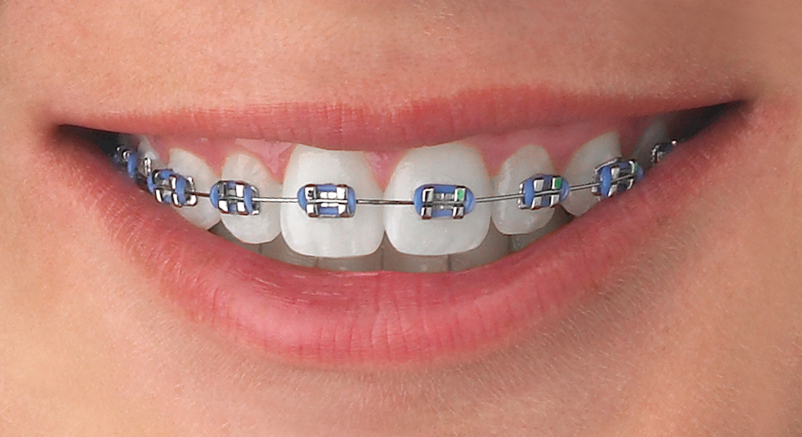

Nuestros Servicios
Odontología General (Prevención y Mantenimiento)
Hacer clic para ver másEs la base de la salud oral y el primer punto de contacto.
Revisiones y diagnósticos: Evaluaciones periódicas para detectar problemas antes de que se vuelvan graves, a menudo utilizando radiografías digitales.
Limpiezas profesionales (Profilaxis): Eliminación de sarro y placa bacteriana para prevenir gingivitis y caries.
Obturaciones (Empastes): Tratamiento para eliminar caries y restaurar el diente con materiales seguros.
.jpg)
Estética Dental
Hacer clic para ver másEnfocada en mejorar la apariencia de la sonrisa.
Blanqueamiento dental: Tratamientos para aclarar el tono de los dientes.
Carillas dentales: Láminas finas (porcelana o composite) que se colocan sobre el diente para corregir forma, color o pequeñas alineaciones.
Diseño de sonrisa: Planificación personalizada para armonizar la estética de toda la dentadura.

Ortodoncia
Hacer clic para ver másEspecialidad encargada de alinear los dientes y corregir la mordida.
Brackets: Tradicionales (metálicos) o estéticos (cerámica/zafiro).
Alineadores invisibles (ej. Invisalign): Opción removible y discreta mediante férulas transparentes.
Ortopedia dentofacial: Corrección de problemas óseos y de crecimiento, especialmente en niños y adolescentes.

Especialidades Restauradoras y Quirúrgicas
Hacer clic para ver másEndodoncia: Tratamiento de conducto para salvar un diente cuando la pulpa (nervio) está afectada o infectada.
Implantología dental: Colocación de raíces artificiales de titanio para sustituir dientes perdidos.
Periodoncia: Tratamiento de enfermedades de las encías (gingivitis y periodontitis) y soporte del diente.
Cirugía oral: Incluye extracciones complejas, como las muelas del juicio, y otras intervenciones en la cavidad oral.
Prótesis: Elaboración de coronas, puentes o dentaduras (fijas o removibles) para restaurar la función masticatoria.